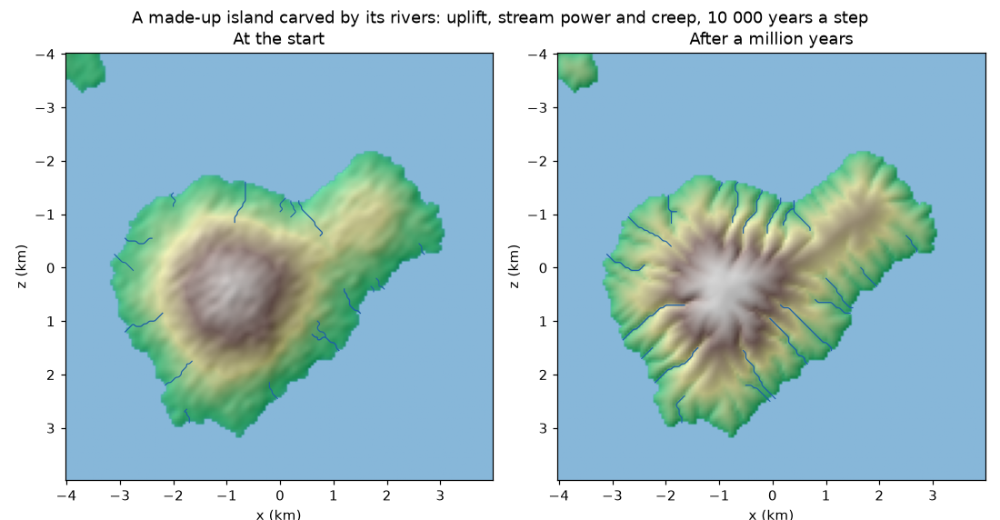

A relief read from a file stays as it is. The erosion rule lets it change: the land rises, the
rivers cut their valleys deeper and the hillslopes round off, step after step, and the rivers come
out of where the water gathers. The other plugins read the changed ground, its drainage and its
rivers from the world.

The example island (examples/eroding-island.yaml): each step stands for 10 000 years. The valleys
deepen and branch, and the rivers grow longer as more ground drains into them.
Put it after the relief rule: it starts from the elevation the world already has.
- rule: relief
with: {path: island.npy, minimum_x: -4, minimum_z: -4, cell_size: 0.05}
- rule: erosion
with: {years_per_unit: 10000, uplift: 0.0002, erodibility: 0.000002, random_receivers: true}
The rule is a landscape evolution model of the usual kind (Tucker and Hancock 2010). Every cell of the ground follows
dz/dt = U − K·A^m·S + κ·∇²z
uplift, metres a year): the land rises, all of it at the same pace.erodibility) says how easily the rock gives way and m (area_exponent) how much the amount
of water counts; the slope’s exponent is 1.diffusivity, m² a year): hillslopes round off, because soil slowly moves
from the convex tops to the concave feet (Fernandes and Dietrich 1997; Roering et al. 1999).The sea (ground at or below sea_level) and the cells on the edge of the grid are the base
level: they do not change, and every drop of water ends in one of them. A relief cut out of a
larger map lets its rivers leave through the edges.
Every piece of time:
The heights are kept in float64 between steps: a change of a fraction of a millimetre a year would be lost if it were rounded to the float32 of the fields every year.
Drawn receivers. Always sending the water to the steepest of eight neighbours cuts straight
valleys lined up with the grid, which a shaded relief shows as stripes. With random_receivers,
each cell sends its water to one of its lower neighbours drawn with a chance that grows with the
square of its slope, so the valleys wander like real ones. The draws come from seed: the same
seed, the same valleys.
The numbers of the model are in metres and years, and years_per_unit says how many years of
erosion each unit of the stage’s clock stands for. With the default of 1, a year of the clock is a
year of erosion, and the ground hardly moves: rivers lower their beds by tenths of a millimetre a
year, so a town that grows for a century sees its ground change by centimetres at the most. To see
valleys form, make every step stand for thousands of years (years_per_unit: 10000), in a stage of
its own before the stages that use the ground.
At the start and then every publish_every steps:
| What | Kind | Unit |
|---|---|---|
elevation, slope |
fields | metres; rise over run |
drainage_area |
field | km² of ground that drains through each cell (0 on the base level) |
| rivers | entities of kind river: a line with a width |
world units; properties width (world units) and drainage_area (km² where the river ends) |
A river starts where the drained area reaches river_area (channel heads drain from hundredths of
a km² to about one; Montgomery and Dietrich 1988) and runs down to the sea, the edge or a bigger
river. The rivers that drain most are traced first, so a main river keeps its whole length and its
tributaries end where they meet it. Its width grows with the area it drains, as hydraulic geometry
finds for the discharge (Leopold and Maddock 1953): width = river_width[0] · area^river_width[1],
3 m · area(km²)^0.5 by default. The line goes through the cell centres, with its corners rounded
(Chaikin 1974). Each river is named after the cell where it starts, so a river that only changes
a little is modified, not replaced.
The defaults are middle values from the literature; set them for your own place.
| Parameter | Default | Range in the literature |
|---|---|---|
erodibility |
1e-5 a year⁻¹ (m = 0.5) | about 1e-7 to 1e-4, from hard to soft rock (Stock and Montgomery 1999; Harel et al. 2016) |
area_exponent |
0.5 | concavity m/n of 0.3 to 0.7, 0.5 most often (Whipple and Tucker 1999) |
diffusivity |
0.005 m² a year | 0.001 to 0.01 m² a year on soil-mantled hillslopes (Fernandes and Dietrich 1997; Roering et al. 1999) |
uplift |
0 | tenths of a millimetre to a few millimetres a year in active mountains |
river_area |
1 km² | channel heads drain from hundredths of a km² to about one (Montgomery and Dietrich 1988) |
river_width |
[3, 0.5] | the exponent 0.5 is hydraulic geometry’s (Leopold and Maddock 1953); the coefficient is a round value |